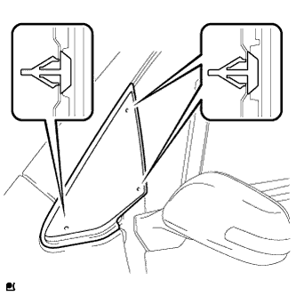
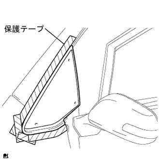
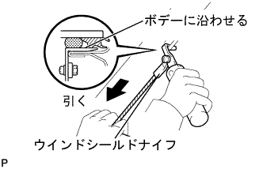
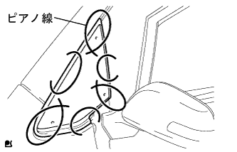

Front Side Fixed Window Assembly LH Removal |
| 1. Remove Front Pillar Garnish Corner Piece LH |
| 2. Remove Front Pillar Garnish LH |
 |
Pull the upper part of the garnish in the direction of arrow (1) shown in the illustration to disengage the 2 clips.
Using nippers or equivalent, cut the front pillar garnish clip.
Pull the garnish in the direction of arrow (2) shown in the illustration, disengage the guide and remove the front pillar garnish LH.
Using a clip remover, remove the front pillar garnish clip from the front pillar LH.
 |
Curtain Shield Airbag Protection
Using cloth or nylon, wrap the airbag portion as shown in the illustration and fix both ends of the cloth or nylon with packing tape.
| 3. Remove Front Side Fixed Window Assembly LH |
 |
 |
Apply protective tape to the body surface around the front side fixed window assembly LH.
Attach suction cups to the front side fixed window assembly LH.
 |
When using a windshield knife
Apply plenty of soapy water to the bonded area.
Insert a windshield knife into the bonded area.
Using a windshield knife, while keeping the blade at a right angle to the edge of the front side fixed window assembly LH and matching the blade to the surface and edge of the front side fixed window assembly LH, pull it parallel to the edge of the front side fixed window assembly LH to cut the adhesive.
 |
When using piano wire
Pass piano wire (0.6mm is suitable) through at the position shown in the illustration, and attach both ends to a mighty puller.
Pull the piano wire alternately to cut the adhesive, leaving the front side fixed window clips.
Holding the suction cups, disengage the 3 front side fixed window clips and remove the front side fixed window assembly LH.